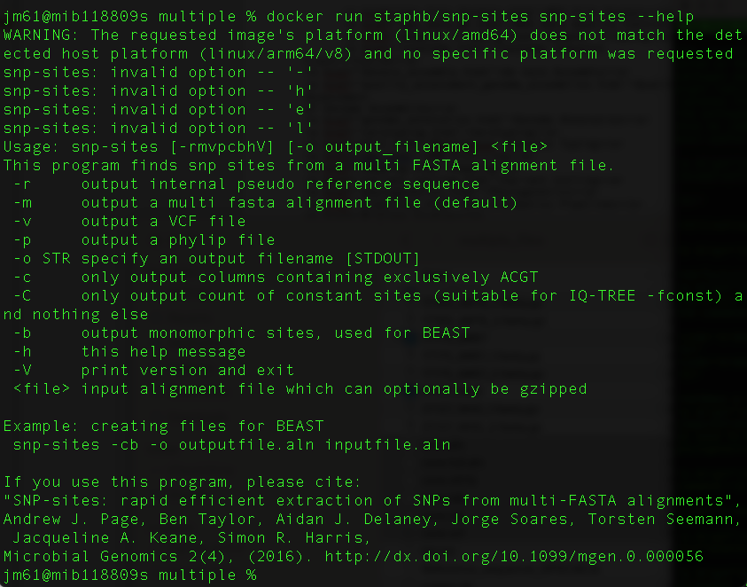
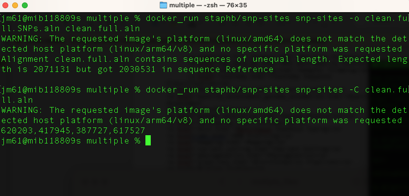
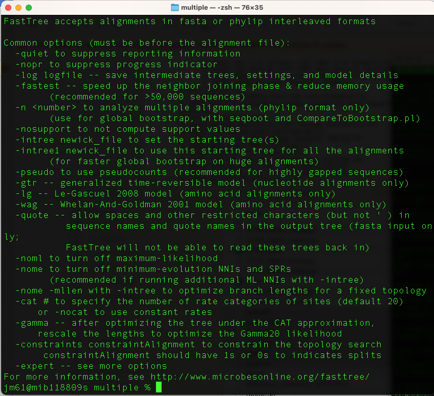
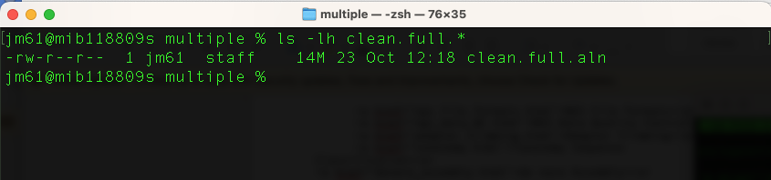
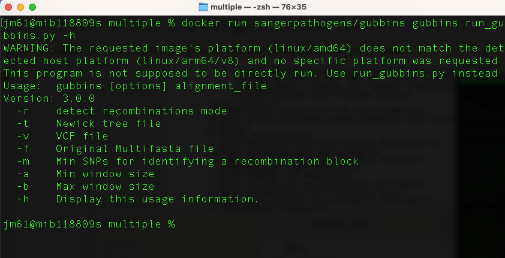
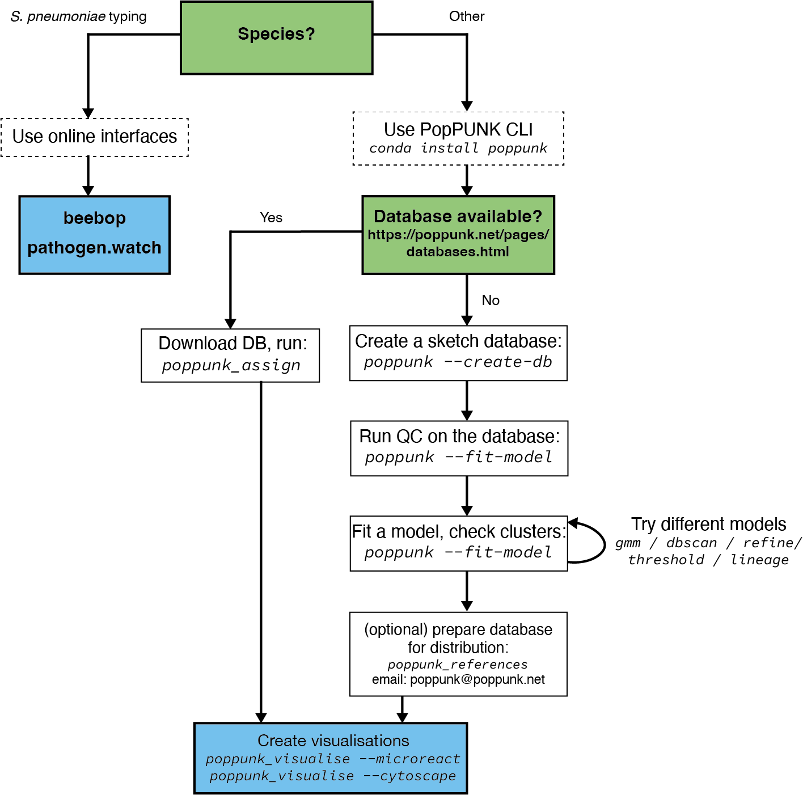
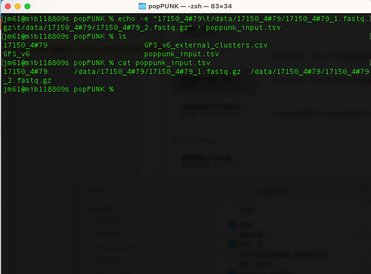

Overview
Phylogenetics is the study of evolutionary relationships among biological entities – often species, individuals or genes (which may be referred to as taxa). The major elements of phylogenetics are summarised in figure below.

Phylogenetic trees based on whole genome data tell us about the relationships of bacterial isolates to each other on a very fine scale. When we combine that high-resolution information about the evolutionary relationships of isolates with geographical data it can inform our understanding of the current distribution of the pathogen and allow us to infer the epidemiological processes that have acted on the bacteria over time. The simplest example of this would be if a phylogeny showed that a pathogen was geographically constrained (e.g. isolates from the same region always cluster together). This might indicate that the pathogen is not rapidly spreading. Whereas a pathogen with a phylogeny that shows isolates from distant regions are likely to be related to isolates from nearby, the interpretation is that the pathogen is likely to be spread across regional borders. Geographical referencing of genomic data can also be combined with temporal information to study the movement of pathogens in space and time. This is most useful when done in real time and thus can be useful for outbreak detection and monitoring.
In this module we will cover: (i) building phylogenetic trees, (ii)identifying regions of recombination and (iii)clustering using popPUNK.
Creating a phylogenetic tree using FastTree
You will use the variant calling results to learn and practice this section.
Tool(s)
In this section, we will be using the following tools: snp_sites and FastTree tools - you can download these tools from a docker repository using the commands:
docker pull staphb/snp-sites
docker pull staphb/fasttree
Make a SNP-only alignment using snp-sites
Creating a phylogeny from whole genome sequences can be a very time consuming and computationally intensive process. We can speed this up by only using the variable sites (SNPs). However, we need to be aware that only including variable sites can affect the evolutionary rate estimates made by phylogenetics software - therefore, we need to account for the sites we remove in our analysis.
We will use snp-sites to do this. You can view the options for snp-sites using the command:
docker run staphb/snp-sites snp-sites -h

First, remove all the invariant sites and create a SNP-only multiple sequence alignment. We will use output from snippy runs described in the previous page. Run the command:
docker_run staphb/snp-sites snp-sites -o clean.full.SNPs.aln clean.full.aln
An explanation of these commands are as follows:
docker_run: is a function to start a container. The function includes the following flags: docker run --rm=True -u $(id -u):$(id -g) -v $(pwd):/data "$@". To understand the docker_run function read the section [Data, Tools and Computational Platforms (Docker)]
staphb/snp-sites: is the docker image
snp-sites: is the tool
-o clean.full.SNPs.aln: specifies the output file
clean.full.aln: specifies the input file - which is an output of snippy
We can see how many invariant sites were removed (and what proportion of A, T, G, C they were) using:
docker_run staphb/snp-sites snp-sites -C clean.full.aln

Creating a phylogenetic tree from the SNPs using FastTree
You can view options for fasttree as follows:
docker_run staphb/fasttree FastTree FastTree -h

We will generate a maximum likelihood phylogenetic tree using this command:
docker_run staphb/fasttree FastTree -nt -gtr clean.full.SNPs.aln >
clean.full.SNPs.aln.tree
An explanation of these commands are as follows:
docker_run: is a function to start a container. The function includes the following flags: docker run --rm=True -u $(id -u):$(id -g) -v $(pwd):/data "$@". To understand the docker_run function read the section [Data, Tools and Computational Platforms (Docker)]
staphb/fasttree: is the docker image
FastTree: is the tool
-nt: specifies that the input alignment is nucleotide
gtr: specifies the evolutionary model
clean.full.SNPs.aln: input alignment
clean.full.SNPs.aln.tree: specifies the output tree name
Let’s explore output of our previous command using the command:
ls -lh clean.full.*

Our maximum likelihood tree is labelled clean.full.SNPs.aln.tree. We can visualise this using figtree. Type the command:
figtree clean.full.SNPs.aln.tree &
Or you can simply right click on the on the clean.full.SNPs.aln.tree file and open it using figtree. How to download and install figtree has been described under "Data, Tools and Computational Platforms".
You will have the output:
Interpreting a phylogenetic tree
We need to remember that the tree we have created is from a SNP only alignment. Strain 21127_1#30 sits on a long branch on its own; which means that it has unique mutations not found in the other strains. Remember that the longer the branch a strain has, the more mutations it has. Strain 15608_3#13 and the reference strain are identical to each other, and have some mutations found also in strains 17150_4#79, 17175_6#87 and 13415_4#10. Strains 17150_4#79, 17175_6#87 and 13415_4#10, have some unique mutations.
Identifying recombination using Gubbins
You will continue using the variant calling output to learn and practice this section.
Overview
Many bacteria participate in high rates of homologous recombination. This means that they donate and receive segments of DNA from each other. In the context of a phylogenetic tree, in which we are comparing similar and dissimilar regions to determine relatedness of isolates this can prove problematic resulting in branch lengths which reflect recombinations rather than divergence. This is very important for Streptococcus pneumoniae which is naturally competent, meaning it can readily take up DNA.
Gubbins (Genealogies Unbiased By recomBinations In Nucleotide Sequences) is an algorithm that iteratively identifies loci containing elevated densities of base substitutions while concurrently constructing a phylogeny based on the putative point mutations outside of these regions. Simulations demonstrate the algorithm generates highly accurate reconstructions under realistic models of short-term diversification of sequences through both point mutation and recombination, and can be run on alignments of many hundreds of bacterial genome sequences. It is therefore not appropriate for looking at recombination across species-wide diversity - this can be done gene-by-gene using software such as fastGEAR. Instead, it works on samples of limited diversity, sharing a recent common ancestor - a strain or lineage.
The required input file for Gubbins is a whole genome FASTA alignment. Each sequence should have a unique identifier, and special characters should be avoided. The sequences should only use the characters ACGT (DNA bases),N (unknown base) or - (alignment gap). If a starting tree is to be included, then this should be a Newick format.The alignment is most easily generated through mapping sequences against a reference sequence. This can be achieved with the popular mapping software Snippy.
Further reading: Analysing whole genome alignments with Gubbins
Tool(s)
For this section, we will be using Gubbins. You can download it from a docker repository using the command:
docker pull sangerpathogens/gubbins
You can view gubbins commands as follows:
docker run sangerpathogens/gubbins gubbins run_gubbins.py -h

Identifying recombination
We will run the gubbins tool on a full genome alignment and not SNPs alignment. Now let’s run this command:
docker_run sangerpathogens/gubbins run_gubbins.py --mar -p /data/output
/data/clean.full.aln
An explanation of these commands are as follows:
docker_run:is a function to start a container. The function includes the following flags: docker run --rm=True -u $(id -u):$(id -g) -v $(pwd):/data "$@". To understand the docker_run function read the section [Data and Computational Platforms (Docker)]
sanger/gubbins: is the docker image
run_gubbins.py: is the tool/program
--mar: use marginal ancestral reconstruction with RAxML instead of the default pyjar
-p /data/output: Output to /data dir in the container with a prefix of output. As /data dir is the mount point of $PWD of your host due to -v, you will see the files in the $PWD of your host
/data/clean.full.aln: input file
This command can take a few minutes to run.
Let's look at what gubbins has done using the command (ls -l output.*)
An explanation of these commands are as follows:
output.branch_base_reconstruction.embl: Base substitution reconstruction in EMBL format
output.recombination_predictions.embl: Recombination predictions in EMBL file format.
output.recombination_predictions.gff: Recombination predictions in GFF format
output.filtered_polymorphic_sites.phylip: Phylip format alignment of filtered polymorphic sites used to generate the phylogeny in the final iteration
output.final_tree.tre: this file contains the final phylogeny in Newick format; branch lengths are in point mutations
output.node_labelled.final_tree.tre: final phylogenetic tree in Newick format but with internal node labels; branch lengths are in point mutations
output.log: log file specifying the software used at each step of the analysis, with accompanying citations
output.per_branch_statistics.csv: per branch reporting of the base substitutions inside and outside recombination events
output.summary_of_snp_distribution.vcf: VCF file summarising the distribution of point mutations
You can explore these output files using (head) command. For example “output.recombination_predictions.gff" is a gff file that contains a record of each recombination block identified, how many SNPs it contains, and what samples are affected.

output.final_tree.tre is a phylogeny without recombination regions. Read in the gubbins filtered tree and plot with ggtree, or visualise in Figtree.

FigTree output
We can also visualise the recombination blocks using a web tool called phandango. Using your browser, navigate to: https://jameshadfield.github.io/phandango/#/
You will need the following files (drag and drop):
- output.final_tree.tre
- output.recombination_predictions.gff
- PROKKA_12252022.gff (output from Prokka)
Phandango should automatically display blocks of recombination in red (ancestral) and blue (specific to a sample)
Clustering using popPUNK
Before you being this section, navigate to the clustering folder. You will use this folder and its contents to learn and practice this section.
Overview
PopPUNK is a tool for clustering genomes. We refer to the clusters as variable-length-k-mer clusters, or VLKCs. Biologically, these clusters typically represent distinct strains. We refer to subclusters of strains as lineages.
The figure below shows an overview of how to run popPUNK

Tool
You can download popPUNK from a docker repository using the command:
docker pull staphb/poppunk
Clustering
Query assignment steps:
1. Download database
As we are working on Streptococcus pneumoniae, we will download the GPS reference database and GPS designation. which we will use to cluster our genome. You can also access reference genomes of other bacterial species from this site.
The Streptococcus pneumoniae GPS reference genome database is saved in you directory as (GPS_v6) and the GPS designation as (GPS_v6_external_clusters.csv)
2. Create a text file with details of your samples
Create a file which lists your sample names and paths to their sequence data using the command:
echo -e "17150_4#79\t/data/17150_4#79/17150_4#79_1.fastq.gz\t/data/17150_4#79/17150_4#79_2.fastq.gz" >
poppunk_input.tsv
This text file contains the sample names and their sequence data. It has no header, is tab separated, and contains the sample
name in the first column. Subsequent columns may contain paths to either assembled or raw read data (the type will automatically be inferred by
checking for the presence of quality scores). If you cat poppunk_input.tsv
You will have the output

3. Clustering your genomes
The command to cluster your genomes is as follows:
docker_run staphb/poppunk poppunk_assign --db GPS_v6 --query /data/poppunk_input.tsv --output poppunk_clusters
--external-clustering GPS_v6_external_clusters.csv
An explanation of these commands are as follows:
docker_run: is a function to start a container. The function includes the following flags: docker run --rm=True -u $(id -u):$(id -g) -v $(pwd):/data "$@". To understand the docker_run function read the section [Data, Tools and Computational Platforms (Docker)]
staphb/poppunk: is the docker image
poppunk_assign: is the tool/program/script
--query /data/poppunk_input.tsv: receives input from the list.txt
--output /data/poppunk_clusters: specifies the output file
--external-clustering /data/GPS_v6_external_clusters.csv: directory containing the GPS clusters for the references
--threads 8: specifies virtual cores
Upon completion, a new folder "poppunk_clusters" will be generated. Navigate to this folder and explore its content.
The output files:
poppunk_clusters_clusters.csv: popPUNK clusters with dataset specific nomenclature
poppunk_clusters_external_clusters.csv: GPSC v6 scheme designations
We can explore "poppunk_clusters_clusters.csv"
Note:
- If a strain has already been assigned a cluster, please rename to run popPUNK (this is to avoid crushing the tool)
- Novel Clusters are assigned NA in the _external_clusters.csv as they have not been defined in the v6 dataset used to designate the GPSCs. Please email: globalpneumoseq@gmail.com to have novel clusters added to the database and a GPSC cluster name assigned after you have checked for low level contamination which may contribute to biased accessory distances.
We can explore "poppunk_clusters_clusters.csv"